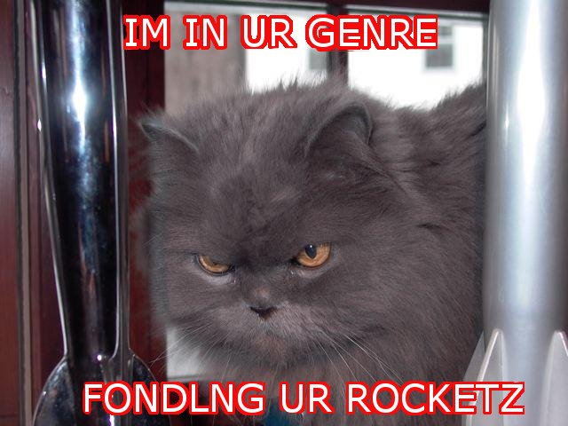

|
|
IM IN UR GENRE
FONDLNG UR ROCKETZ

photo credit: Holly Black/Kelly Link/Gavin Grant model: Holly Black's cat
Making Light reports that "The House Beyond Your Sky" is on the Hugo Ballot... up against Tim Pratt, Robert Reed, Bruce McAllister, and Neil Gaiman! Wow!
(Congrats also to Tim, Paul Melko, Charlie Stross, Gordon, Gardner, Sheila, LCRW, Sarah Monette, Frank Wu, Scalzi, and everyone else on the ballot. I wish I was going to Tokyo!)
(p.s. if you don't get the cat thing, go here)
Posted by benrosen at March 28, 2007 11:32 PM | Up to blogSomeone on Making Light pointed out that there's only ONE woman nominated in all the fiction categories. Which is really weird.
Posted by: Benjamin Rosenbaum at March 28, 2007 11:47 PMCongratulations!
Posted by: John Scalzi at March 28, 2007 11:55 PMCongratulations! If I were able, I'd be voting for "House".
My fave lolcats are pretty much all up at:
http://www.roflcat.com/
Congratulations! That's fantastic news.
Posted by: Steph Burgis at March 29, 2007 03:39 AMCongratulations!
Posted by: Trent at March 29, 2007 07:36 AMWay to go, man! The gender peculiarities don't diminish the presence of any single work, you totally deserve to be there!
Posted by: Christopher at March 29, 2007 07:38 AMWow, man, that's great! Im in ur fanboyz!
peace
Matt
Congratulations!
So why don't you come to Tokyo? I'll offer you a bed if you like, but not a room. I'm still just a poor translator, although I'm in fifties now.
Yoshio
Congrats Ben, and I hope the story goes far!
Posted by: Jetse at March 29, 2007 11:47 AMCongrats!
The relative lack of women is a real disappointment, I agree.
Posted by: Tim Pratt at March 29, 2007 12:09 PMHuge congrats, Ben!!
I usually notice gender disparities such as that right away, but this time I was blinded by my excitement for my husband and my peeps! Disappointing, but I'm still happy for you guys!
Posted by: Heather Shaw at March 29, 2007 12:32 PMThanks everyone!
Yoshio, I would *love* to come. Unfortunately we're moving to Switzerland at the beginning of July, my kids are starting school mid-August, we're changing apartments the beginning of September, and we have to come back to the states for a wedding (which I'm officiating at) in September... so going to Japan in August is not really feasible. :-(
Posted by: Benjamin Rosenbaum at March 29, 2007 02:54 PMCongrats, Ben!
Posted by: Christopher Barzak at March 29, 2007 03:15 PMwooHOOOOOO!
Posted by: Haddayr at March 29, 2007 04:09 PMWOO! Congratulations!
Posted by: tacithydra at March 31, 2007 04:32 PM